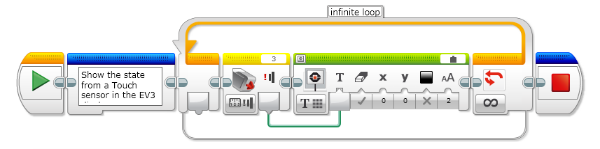
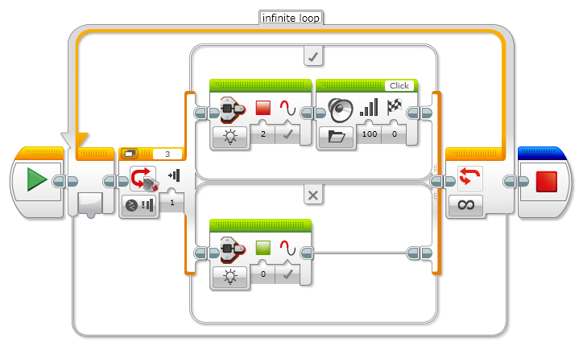
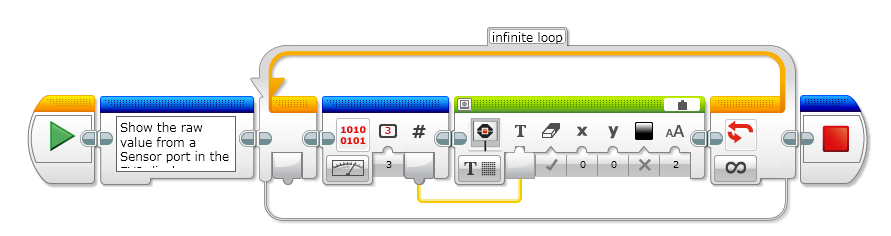

The analog EV3 Touch Sensor is a simple but exceptionally precise tool that detects when its front button is pressed or released and is able to count single and multiple presses.

How to use the sensor Example 1: Show the state from a Touch sensor in the EV3 display

Example 2: Example to show how to use a IF statement using a Touch Sensor

Example 3: Show the raw value from a Sensor port in the EV3 display

package ev3dev.sensors.ev3;
import ev3dev.sensors.Battery;
import lejos.hardware.port.SensorPort;
import lejos.robotics.SampleProvider;
import lejos.utility.Delay;
public class TouchSensorDemo {
//Robot Configuration
private static EV3TouchSensor touch1 = new EV3TouchSensor(SensorPort.S1);
//Configuration
private static int HALF_SECOND = 500;
public static void main(String[] args) {
final SampleProvider sp = touch1.getTouchMode();
int touchValue = 0;
//Control loop
final int iteration_threshold = 20;
for(int i = 0; i <= iteration_threshold; i++) {
float [] sample = new float[sp.sampleSize()];
sp.fetchSample(sample, 0);
touchValue = (int)sample[0];
System.out.println("Iteration: {}" + i);
System.out.println("Touch: {}" + touchValue);
Delay.msDelay(HALF_SECOND);
}
System.out.println(Battery.getInstance().getVoltage());
}
}